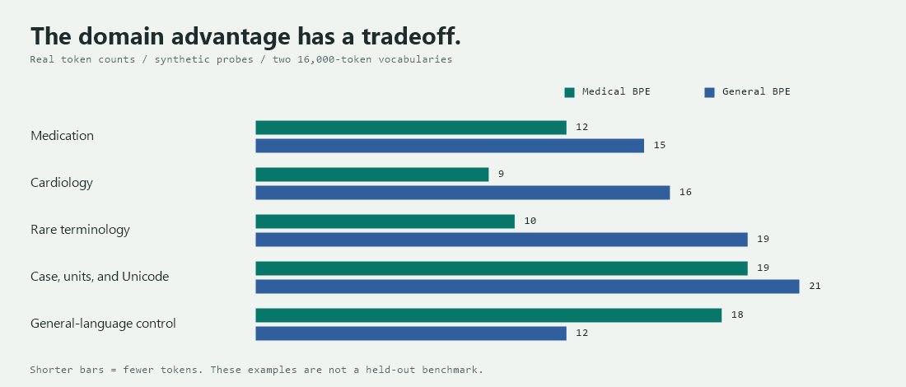

01 The starting point
Building a Medical Tokenizer
Build a vocabulary that knows your domain.
A general tokenizer can read cardiomyopathy. A domain tokenizer can learn to spend fewer pieces on it. The interesting part is building one, then proving what actually changed.
These notes follow medtok, the practical project currently named tokenization-explainer. You will prepare medical text, learn a vocabulary from scratch with Hugging Face tokenizers, compare it with a general-text control, and save a reusable artifact. The BPE engine comes from the library; the corpus, training recipe, and learned vocabulary are yours.
At the same vocabulary budget, does training on medical text reduce token counts on unseen medical documents, and what does it cost on general text?
02 Data comes first
Your corpus is the design decision.
BPE learns recurring adjacent pieces, not medical definitions. If troponin occurs often enough, its fragments may merge. A term that is absent, rare, or written in several inconsistent ways may remain fragmented.
The medtok training path uses PubMed abstracts. That is biomedical research prose, not a representative sample of discharge summaries, prescriptions, or conversations. Choose your corpus to match the language you actually expect to process.
Start with a data contract
- UTF-8 text, one document per line, or JSONL with a non-empty string
textfield. - Keep a record of source, license, download date, filtering rules, and document identifiers.
- Check duplicates, boilerplate, language balance, and unusually short or long documents.
- Preserve meaningful case, punctuation, units, and symbols.
BRCA1,5 mg, and5 µgare not interchangeable strings.
{"text": "An authored example about myocardial infarction."}
{"text": "An authored example about blood glucose measurement."}Illustrative JSONL records, not patient data. The source reader strips surrounding whitespace and skips blank lines; malformed JSON may fall back to raw text. Validate JSONL before training rather than relying on that permissive fallback.
Do not put patient identifiers, private notes, or restricted datasets into a public repository. Verify access rights and de-identification requirements. A tokenizer vocabulary is not a privacy guarantee.
Download the experiment's two domains
Run every shell command below from the implementation repository, currently tokenization-explainer, later medtok. First install its environment with uv sync. Downloads need internet access.
uv sync
uv run python scripts/download_pubmed_sample.py --max-docs 50000
uv run python scripts/download_general_sample.pyThe general-text script prepares WikiText training and held-out files. Use the same trainer for both domains so that algorithm and vocabulary target stay fixed.
03 Protect the experiment
Split before the vocabulary learns.
A tokenizer can overfit too. Evaluating the exact documents that supplied its frequent pairs gives an optimistic view of compression. Freeze your splits before training.
uv run python scripts/split_corpus.py --heldout-n 5000 --seed 42Counts assume the source file contains exactly 50,000 rows. The script reserves at most 5,000 rows; a smaller corpus can leave no training rows.
The script shuffles line records with seed 42. It does not deduplicate abstracts, group related documents, or ensure a time-based holdout. Different rows can contain identical text. Deduplicate before splitting and verify content overlap, not just row indices.
Train learns merges. Validation selects vocabulary size and preprocessing. Test is opened once for the final report. The basic medtok walkthrough has a train/held-out split; create a separate validation file before tuning.
04 A tokenizer is a pipeline
Bytes in. Learned pieces out.
There are two different operations: training discovers merge rules and token IDs; encoding applies the saved rules to new text. Encoding does not learn a new vocabulary for each sentence.
- 01 / INPUTPreserve the text
No tokenizer normalizer is configured. The training-file reader still strips outer whitespace.
- 02 / BOUNDARIESByteLevel pre-tokenizer
Split with the library's byte-level pre-tokenizer. Do not add a leading space.
- 03 / LEARNINGBPE vocabulary + merges
Start with byte symbols. Merge frequent adjacent pairs within pre-tokenized chunks.
- 04 / OUTPUTIDs and reversible decoding
Map pieces to IDs. Decode the complete sequence back to text with the byte-level decoder.
What one merge does
In a deliberately simplified corpus, suppose cardio and myopathy are already pieces and their adjacent pair is the most frequent eligible pair. BPE adds cardiomyopathy and records that merge. Repeating this process builds a ranked list of merges. This is a schematic explanation, not a trace of medtok's learned merge order.
The initial alphabet includes all 256 byte values. That provides coverage for arbitrary valid UTF-8 text without needing a medical dictionary. It does not mean every character is one token: non-ASCII characters span multiple bytes, and learned merges may combine or split their byte representations.
Ġ in a raw piece is the byte-level representation commonly used for a space. It is not an extra letter in the patient's text. Decode the IDs rather than joining the displayed pieces. See the pipeline reference →
05 The actual training recipe
Train your medical BPE.
The core configuration below follows the medtok trainer. The library implements BPE; you do not need to implement its merge-counting engine yourself.
from tokenizers import Tokenizer, decoders, models
from tokenizers import pre_tokenizers, processors, trainers
tokenizer = Tokenizer(models.BPE())
tokenizer.pre_tokenizer = pre_tokenizers.ByteLevel(add_prefix_space=False)
tokenizer.decoder = decoders.ByteLevel()
tokenizer.post_processor = processors.ByteLevel(trim_offsets=True)
trainer = trainers.BpeTrainer(
vocab_size=16000,
min_frequency=2,
special_tokens=["<|endoftext|>", "<pad>"],
initial_alphabet=pre_tokenizers.ByteLevel.alphabet(),
)vocab_size is a target, including the initial alphabet and special tokens. A small corpus or frequency cutoff can stop training before that target. min_frequency=2 is the minimum pair frequency for a merge, not a guarantee that every final token appears twice in encoded documents.
trim_offsets=True adjusts span offsets associated with byte-level pieces; it does not delete spaces from decoded text. Registering EOS and padding tokens allocates IDs, but does not by itself append EOS to each sequence.
uv run python scripts/train_medical_tokenizer.py --corpus data/pubmed_train.jsonl --out artifacts/medical-bpe-pubmed/tokenizer.json --vocab-size 16000 --min-frequency 2
uv run python scripts/train_medical_tokenizer.py --corpus data/general_train.jsonl --out artifacts/general-bpe/tokenizer.json --vocab-size 16000 --min-frequency 2The trainer streams batches of non-empty documents through train_from_iterator, creates the output directory, and writes a serialized tokenizer.json. Record the actual vocabulary size printed at the end of each run.
A smaller first run
The implementation also includes an authored corpus and a tiny fallback artifact. Run the default trainer for a quick local smoke test:
uv run python scripts/train_medical_tokenizer.pyThis writes artifacts/medical-bpe/tokenizer.json, a different path from the PubMed-trained artifact. Do not label its results as full PubMed evaluation.
06 Lab / token inspection
Same sentence. Different vocabulary.
These are real encodings from the two local 16k artifacts, exported using Hugging Face tokenizers. The sentences are synthetic illustration probes, not a held-out benchmark. The browser displays saved outputs; it does not train or run a tokenizer.
Myocardial infarction was associated with elevated troponin.
Raw byte-level pieces are shown exactly as exported, including space markers. A piece can contain only part of a Unicode character's bytes. Both complete ID sequences decode exactly to the input.

Artifact provenance
Inputs live in the synthetic example file. The exporter records each artifact's SHA-256, library version, vocabulary size, IDs, pieces, and decoded text. No patient records are embedded.
Colab playbook: medical 16k, medical 32k, and GPT-5
The project's custom medical tokenization playbook on Google Colab compares the published 16k and 32k tokenizers on the same text. The implementation repository used to build the custom medical tokenizer is gaurav36/med-tok on GitHub. The repository contains the implementation; the Hugging Face repositories below supply the tokenizer artifacts loaded by these examples.
The outputs below were supplied by the project author from the Colab playbook. They are separate from the saved local-artifact lab above, and have not been independently rerun here. At the time of this update, Colab redirected to sign-in and the GitHub URL returned 404 from the documentation environment; access or sharing settings may need checking. The Hub names identify the reported 16k/32k variants, not independently verified artifact sizes or revisions.
Load a trained tokenizer, then apply it to new text
PreTrainedTokenizerFast provides the Transformers interface to a fast tokenizer backed by the tokenizers library. from_pretrained() loads its saved vocabulary, merge rules, and configuration from the Hub or a local cache. It does not train the tokenizer again or load a language model. In Colab, install the dependency if needed:
%pip install transformersUse distinct variable names for the two artifacts. That keeps the comparison explicit even when notebook cells run out of order.
from transformers import PreTrainedTokenizerFast
medical_16k = PreTrainedTokenizerFast.from_pretrained(
"gaurav36/medical-bpe-16k"
)
medical_32k = PreTrainedTokenizerFast.from_pretrained(
"gaurav36/medical-bpe-32k"
)
text = "Acetylcholinesterase inhibitors are used in Alzheimer's disease treatment."
print(medical_16k.tokenize(text))
print(medical_32k.tokenize(text))The published artifacts are medical-bpe-16k and medical-bpe-32k. Loading uncached files requires internet access and permission to access the repositories. The sentence is an illustrative tokenization input, not treatment guidance.
Reported medical 16k output: 15 pieces
["A", "cetyl", "cholinesterase", "Ġinhibitors", "Ġare", "Ġused", "Ġin", "ĠAl", "z", "he", "imer", "'s", "Ġdisease", "Ġtreatment", "."]Reported medical 32k output: 11 pieces
["Acetyl", "cholinesterase", "Ġinhibitors", "Ġare", "Ġused", "Ġin", "ĠAlzheimer", "'s", "Ġdisease", "Ġtreatment", "."]Compare with the encoding selected for GPT-5
Use tiktoken.encoding_for_model("gpt-5") to select GPT-5's text encoding according to the installed tiktoken version. This loads encoding data, not GPT-5 weights, and does not call the OpenAI API or require an API key. Initial installation and uncached encoding downloads need internet access. This is an external tokenizer baseline, not a same-recipe general BPE control.
%pip install -U tiktokenimport tiktoken
gpt5_encoding = tiktoken.encoding_for_model("gpt-5")
text = "Acetylcholinesterase inhibitors are used in Alzheimer's disease treatment."
gpt5_ids = gpt5_encoding.encode(text)
print("Encoding:", gpt5_encoding.name)
print("Token IDs:")
print(gpt5_ids)
gpt5_pieces = [
gpt5_encoding.decode_single_token_bytes(token_id).decode(
"utf-8", errors="replace"
)
for token_id in gpt5_ids
]
print("\nTokens:")
print(gpt5_pieces)
print("Token count:", len(gpt5_ids))
assert gpt5_encoding.decode(gpt5_ids) == textThe variable gpt5_ids holds integers; gpt5_pieces is a readable byte-decoded view. Spaces in this view appear as actual spaces, such as " inhibitors", rather than the Hugging Face raw-piece marker Ġ. For other inputs, individual tokens can split a UTF-8 character: errors="replace" can then produce replacement characters in this diagnostic view. Decode the complete ID sequence to check reconstruction, as shown above.
GPT-5 output pending verification. The supplied result repeats the medical-16k list, including its Ġ markers, so it is not attributed to this tiktoken cell. Run this cell in the linked Colab to obtain the actual encoding name, IDs, pieces, and count. If the installed version does not recognize gpt-5, upgrade tiktoken and restart the notebook runtime before retrying; do not silently substitute a different model.
Where do the differences come from?
| Tokenizer | Acetylcholinesterase | Alzheimer's | Whole sentence |
|---|---|---|---|
| Medical 16k | 3 pieces | 5 pieces | 15 pieces |
| Medical 32k | 2 pieces | 2 pieces | 11 pieces |
| GPT-5 via tiktoken | Not verified | Not verified | Run the cell above |
For Acetylcholinesterase, the medical 16k tokenizer uses A | cetyl | cholinesterase, and medical 32k uses Acetyl | cholinesterase. The 32k output saves one piece on this word relative to 16k. Neither custom tokenizer makes the entire word a single token in this sentence.
The remaining three pieces saved by 32k come from Alzheimer's: ĠAl | z | he | imer | 's becomes ĠAlzheimer | 's. Inspect the GPT-5 cell's output separately before comparing those boundaries.
Across this sentence, 32k uses 26.7% fewer pieces than 16k, calculated as (15 - 11) / 15 × 100. A percentage relative to GPT-5 requires its verified count; the earlier GPT-2 count cannot be transferred to GPT-5. This single example does not isolate vocabulary size from training differences or demonstrate improved medical reasoning, latency, or overall model quality.
What does the space marker mean?
Ġ is the visible byte-level representation used for a space in these token strings. For example, Ġinhibitors represents a piece that includes the preceding space. It is not a literal extra letter in the input. Case and leading spaces affect segmentation: changing Acetylcholinesterase to lowercase or placing it after a space can change the pieces. Keep input strings identical when comparing tokenizers.
From pieces to IDs, and back
For the Hugging Face medical tokenizers, tokenize() exposes the pieces; calling the tokenizer returns an encoding with input_ids and auxiliary fields such as an attention mask. Each ID is an index in that tokenizer's vocabulary, not a medical concept number or a score. The supplied list of 15 IDs corresponds to the 16k output. Use the 16k variable explicitly instead of a reused tok that might now refer to the 32k tokenizer or a tiktoken encoding.
encoding = medical_16k(text, add_special_tokens=False)
print(encoding["input_ids"])
print(medical_16k.convert_ids_to_tokens(encoding["input_ids"]))Reported 16k IDs and their pieces: the snippet makes special-token exclusion explicit to compare text pieces consistently. The original supplied cell used tok(text); automatic special-token behavior depends on the loaded configuration.
[34, 9986, 9670, 3517, 408, 907, 272, 1747, 91, 261, 13426, 727, 816, 713, 15]["A", "cetyl", "cholinesterase", "Ġinhibitors", "Ġare", "Ġused", "Ġin", "ĠAl", "z", "he", "imer", "'s", "Ġdisease", "Ġtreatment", "."]In this reported 16k mapping, ID 34 maps to A, 9986 to cetyl, and 9670 to cholinesterase. Another tokenizer can assign completely different pieces to the same integers. No verified 32k or GPT-5 IDs were supplied here, so these medical-16k IDs must not be reused with either of those tokenizers.
convert_ids_to_tokens() gives the raw piece representations, including space markers. To reconstruct readable text, use the matching tokenizer's decoder. This is a check to run in the notebook, not an independently executed result:
decoded = medical_16k.decode(
encoding["input_ids"],
skip_special_tokens=False,
clean_up_tokenization_spaces=False,
)
print(decoded)
assert decoded == textFor a reproducible comparison, record len(medical_16k) and len(medical_32k) to inspect loaded vocabulary sizes including added tokens. Record gpt5_encoding.name, the tiktoken version, and the Transformers version. Pin each Hub load with an actual commit hash using revision=.... Repository names and unpinned default revisions alone do not freeze an experiment. Encoding this plain sentence does not count the complete overhead of a GPT-5 API conversation, tools, or other request content.
The supplied medical example gives 15 pieces with 16k and 11 with 32k; the GPT-5 cell provides a separate comparison to run and record. Loading and encoding apply existing rules, not training. A local tokenizer comparison does not modify GPT-5 or establish its clinical capabilities. See the model compatibility boundary before using a custom vocabulary with pretrained weights.
07 Evidence, not anecdotes
Make it a fair test.
The most informative control is not a tokenizer with a much larger vocabulary. It is the same byte-level BPE recipe and same vocabulary target, trained on general text. Even then, corpus quality, size in bytes, document length, and duplication can confound the result. Equal document counts do not imply equal training budgets.
| Tokenizer | Vocabulary | Medical test | General test |
|---|---|---|---|
| Custom medical BPE | 16k target | Domain efficiency | Out-of-domain cost |
| General BPE control | 16k target | Matched control | General efficiency |
cl100k_base | About 100k | External baseline | External baseline |
o200k_base | About 200k | External baseline | External baseline |
Only your own train/test separation can be audited here. You cannot establish that public PubMed or WikiText documents were absent from the external tokenizers' training data. Call them baselines, not controlled unseen-data experiments.
Use a metric with an explicit denominator
The medtok comparator sums counts across documents before dividing. It is not the unweighted mean of per-document ratios. Whitespace words are a convenient denominator, not medical concepts or a language-independent measure.
- Tokens per 100 characters: useful alongside fertility, with Python Unicode code-point counts.
- Average tokens per document: a direct view of sequence length on an unchanged evaluation set.
- Single-token term rate: useful for inspection, but curated terms and leading-space choices can change the result.
- Round-trip checks: verify reconstruction of spaces, case, numbers, punctuation, and non-ASCII text.
uv run python scripts/compare_tokenizers.py --no-qwen --tokenizer-json artifacts/medical-bpe-pubmed/tokenizer.json --general-bpe artifacts/general-bpe/tokenizer.json --heldout-medical data/pubmed_heldout.jsonl --heldout-general data/general_heldout.jsonl--no-qwen omits the optional Qwen baseline, not the tiktoken baselines. Their encoding assets may need network access on first use. Confirm that the report includes both BPE artifacts and both held-out sets: the source command can warn and skip missing optional inputs.
Lower fertility measures token efficiency on this sample. It does not demonstrate clinical accuracy, safer generation, better reasoning, or lower end-to-end latency. Measure downstream quality and performance separately. A general-domain loss can illustrate specialization, but it is not a required proof of it.
Reading a custom medical tokenizer's 32k run
This run asks a concrete question: can a vocabulary trained on biomedical text represent PubMed abstracts more compactly, and what happens on general English? The results below are transcribed from the terminal output supplied by the project author, who identified the custom medical tokenizer as a 32k vocabulary. They are a separate experiment from the saved 16k encodings in the inspection lab above; those encodings have not been replaced.
A 32k vocabulary is a budget of roughly 32,000 token entries, not a dictionary of 32,000 medical terms. In byte-level BPE, that budget includes byte symbols, learned fragments, longer pieces, and special tokens. Training on PubMed makes repeated biomedical sequences candidates for merges; it does not teach a model what the terms mean. More vocabulary entries can help represent frequent terms compactly, but this run alone does not show that 32k is optimal or better than 16k.
The command and what it loads
The supplied command was run from the implementation checkout named med-tok, not from this blog folder:
uv run python scripts/compare_tokenizers.py --heldout-medical data/pubmed_heldout.jsonl --heldout-general data/general_heldout.jsonl --general-bpe artifacts/general-bpe/tokenizer.jsonThis command evaluates existing tokenizers; it does not train a 32k vocabulary. The output identifies artifacts/medical-bpe-pubmed/tokenizer.json as the selected custom-med artifact. The two --heldout-* options supply evaluation files, and --general-bpe supplies the general-text BPE control. cl100k and o200k are external tiktoken baselines; qwen is the Qwen tokenizer baseline reported by the script. These columns compare encodings, not the capabilities of the corresponding language models.
Provenance limit: this is a user-reported run, not an independently rerun benchmark. The pasted output does not print actual vocabulary sizes, artifact hashes, corpus hashes, library versions, or the exact Qwen identifier. In particular, the general BPE vocabulary size is not established here, so this must not be described as a verified equal-budget 32k comparison. The PyTorch warning means model loading is unavailable in that environment; tokenizer-only evaluation can still run, as these tables show.
Read the three summary columns first
- Fertility = total tokens / total whitespace words. A value of 1.312 means about 131.2 tokens per 100 whitespace-delimited words across that dataset. It is not an accuracy score or a claim that each word uses exactly that many pieces.
- tok/100ch = 100 × total tokens / total characters. This reports token density using character counts instead of word counts. The comparator uses Unicode code points, not UTF-8 bytes.
- Mean pieces = total tokens / number of inputs. An input is a short probe in the illustrative tables and a document in the held-out tables. Comparing those means across different datasets does not measure improvement because the texts differ.
For the same non-empty evaluation set, the denominators are fixed across tokenizers, so all three columns describe the same total-token differences from different perspectives. They are not three independent demonstrations of model quality.
1. Probe piece counts: inspect individual successes and exceptions
| Probe | cl100k | o200k | custom-med | general-bpe | qwen |
|---|---|---|---|---|---|
| empagliflozin 10 mg daily | 10 | 9 | 9 | 10 | 11 |
| acetylcholinesterase inhibitor | 7 | 6 | 3 | 10 | 7 |
| BRCA1 pathogenic variant | 6 | 5 | 5 | 7 | 6 |
| ICD-10-CM E11.65 | 10 | 10 | 10 | 12 | 13 |
| serum creatinine 1.4 mg/dL | 11 | 11 | 8 | 12 | 11 |
| β-lactam allergy | 5 | 5 | 5 | 8 | 5 |
| community-acquired pneumonia | 4 | 4 | 6 | 7 | 4 |
| left lower lobe consolidation | 5 | 5 | 4 | 5 | 5 |
| Naïve CD4+ T cells | 8 | 8 | 8 | 9 | 8 |
| COVID-19 mRNA vaccine | 5 | 6 | 7 | 7 | 6 |
| metformin 1000 mg twice daily | 9 | 8 | 6 | 7 | 11 |
| hemoglobin A1c 8.2% | 10 | 10 | 8 | 12 | 10 |
| troponin I elevated | 5 | 5 | 4 | 6 | 5 |
| NT-proBNP 4200 pg/mL | 9 | 10 | 10 | 13 | 11 |
| levothyroxine 75 μg daily | 10 | 9 | 10 | 9 | 11 |
| vancomycin trough 18 μg/mL | 9 | 11 | 10 | 11 | 10 |
| ST-elevation myocardial infarction | 8 | 6 | 6 | 12 | 8 |
| chronic kidney disease stage 4 | 7 | 7 | 5 | 6 | 7 |
| HER2-negative breast cancer | 5 | 5 | 7 | 9 | 5 |
| oseltamivir 75 mg twice daily | 10 | 9 | 9 | 9 | 11 |
Each number counts pieces for the whole input. For acetylcholinesterase inhibitor, custom-med needs 3 pieces versus general BPE's 10: 70% fewer on this one phrase. The count alone does not reveal the boundaries or prove that acetylcholinesterase is one token. Inspect the actual pieces or IDs to find out.
Specialization is not a guarantee of winning every row. For community-acquired pneumonia, custom-med uses 6 pieces while cl100k, o200k, and qwen each use 4. The terminal's tie label means multiple tokenizers share the lowest count; it does not necessarily include custom-med, and it does not mean all counts are equal.
2. Medical probe summary: the average of a small illustration set
| Tokenizer | Fertility | tok/100ch | Mean pieces |
|---|---|---|---|
| cl100k | 2.250 | 31.16 | 7.65 |
| o200k | 2.191 | 30.35 | 7.45 |
| custom-med | 2.059 | 28.51 | 7.00 |
| general-bpe | 2.662 | 36.86 | 9.05 |
| qwen | 2.426 | 33.60 | 8.25 |
Custom-med averages 7.00 pieces per probe, compared with 9.05 for general BPE: approximately 22.7% fewer tokens, using (9.05 - 7.00) / 9.05 × 100. Its fertility of 2.059 is consistent with many words still splitting. This table summarizes the examples above; it is not additional held-out evidence, and a curated set of 20 probes cannot represent all medical writing.
3. General-English control: look outside the training domain
| Tokenizer | Fertility | tok/100ch | Mean pieces |
|---|---|---|---|
| cl100k | 1.218 | 20.82 | 15.93 |
| o200k | 1.212 | 20.73 | 15.85 |
| custom-med | 1.486 | 25.40 | 19.43 |
| general-bpe | 1.315 | 22.49 | 17.20 |
| qwen | 1.218 | 20.82 | 15.93 |
The direction reverses here: custom-med averages 19.43 pieces versus general BPE's 17.20, about 13.0% more. A vocabulary selected from biomedical text can spend entries on pieces that are less useful in ordinary English. This is evidence of an out-of-domain token cost on these inputs, not evidence that general English cannot be encoded. These are illustrative control results; the separate 5,000-document general evaluation appears below.
4. Single-token term rate: why 20% versus 0% matters
| Tokenizer | Single-token rate | Terms encoded as one piece |
|---|---|---|
| cl100k | 0.0% | 0/20 |
| o200k | 0.0% | 0/20 |
| custom-med | 20.0% | 4/20 |
| general-bpe | 0.0% | 0/20 |
| qwen | 0.0% | 0/20 |
Here, 4 / 20 × 100 = 20%: four entries in the tested term list each became exactly one token with custom-med. None of those tested entries became one token with the other tokenizers under the same term-encoding procedure. 0% does not mean 0% medical knowledge or failed encoding. A term represented by two or more valid subwords simply does not pass this particular one-piece test.
For intuition, imagine a term encoded as [whole-term] by tokenizer A and [part-one] [part-two] by tokenizer B. A contributes one success to this metric and B contributes none, even if both reconstruct the text exactly. This is a schematic example, not a claimed segmentation from your run.
The term list is not interchangeable with the full probe phrases above. The pasted output does not name the four successful terms, so we cannot identify them from these tables. Case, leading spaces, spelling, and special-token settings can change the result. This score describes coverage of this particular 20-term list, not 20% of all medical terminology, and does not establish better semantic understanding.
5. Held-out PubMed: the main in-domain measurement
| Tokenizer | Fertility | tok/100ch | Mean pieces per document |
|---|---|---|---|
| cl100k | 1.477 | 21.71 | 234.24 |
| o200k | 1.446 | 21.25 | 229.33 |
| custom-med | 1.312 | 19.29 | 208.13 |
| general-bpe | 1.624 | 23.88 | 257.68 |
| qwen | 1.509 | 22.18 | 239.36 |
Custom-med has the lowest reported fertility, 1.312, and averages 208.13 tokens per abstract. Compared with general BPE's 257.68, that is about 49.55 fewer tokens per abstract, or 19.2% fewer. Relative to cl100k, o200k, and qwen, the reductions are approximately 11.1%, 9.2%, and 13.0%, respectively. These percentages use the displayed, rounded means and each baseline as the denominator.
This is more informative than a few hand-picked phrases because it measures complete documents at a larger scale. Shorter encodings can fit more text into a fixed token context budget. They do not by themselves prove lower wall-clock latency, better answers, or clinical safety.
6. Held-out general English: quantify the tradeoff
| Tokenizer | Fertility | tok/100ch | Mean pieces per document |
|---|---|---|---|
| cl100k | 1.175 | 22.04 | 155.85 |
| o200k | 1.166 | 21.87 | 154.65 |
| custom-med | 1.395 | 26.16 | 184.94 |
| general-bpe | 1.120 | 21.01 | 148.54 |
| qwen | 1.220 | 22.87 | 161.71 |
General BPE has the lowest reported fertility here, 1.120. Custom-med averages 184.94 pieces per document versus 148.54 for general BPE: about 36.40 additional tokens, or 24.5% more. Read the two held-out tables together: the medical tokenizer is more compact on these PubMed abstracts but less compact on these general documents. Whether that tradeoff is worthwhile depends on the intended input mix.
In this reported 32k run, custom-med uses about 19.2% fewer tokens than general BPE on held-out PubMed, about 24.5% more on held-out general English, and encodes 4 of 20 tested domain terms as single tokens. These are token-efficiency and term-coverage results, not a model-quality benchmark.
What to verify before calling it a fair 32k benchmark
The terminal headings say "FAIR eval," "should win," and "expected to lose." Those are labels, not experimental guarantees. Verify actual vocabulary sizes for both custom artifacts, training-data budgets, preprocessing, deduplication, and train/test content overlap. A held-out filename does not prove unseen data, and external baseline training overlap is not established. Keep a separate validation set if choosing between 16k and 32k; do not repeatedly tune against the final test set.
Record the artifact and dataset hashes, exact baseline versions, term list, and encoding settings before publishing a reproducible comparison. The two papers below explain why this distinction matters: tokenizer choice can affect trained models, but minimizing token counts is not sufficient evidence of downstream gains. Using this 32k vocabulary with a pretrained model still requires the embedding and model-adaptation work described later.
08 Lab / vocabulary budget
A larger vocabulary has a bill.
More merges can shorten sequences, but rare pieces need enough evidence to be useful. Every vocabulary entry also needs an embedding row in a model built to use it. There is no universal medical vocabulary size.
Estimate = vocabulary size × embedding dimension × 2 bytes. Excludes gradients, optimizer state, activations, and the rest of the model. An untied output projection adds another vocabulary-sized matrix. This calculator predicts memory, not fertility.
Select on validation, report on test
The source sweep compares 16k, 32k, 50k, 64k, and 100k targets. Its knee rule selects the smallest vocabulary whose mean tokens per document is within 2% of the lowest measured value. That is a useful heuristic, not a universal optimum.
Once you have created a separate data/pubmed_validation.jsonl, run:
uv run python scripts/sweep_vocab_size.py --corpus data/pubmed_train.jsonl --heldout data/pubmed_validation.jsonl --no-qwenThe option is named --heldout, but use validation data for this decision. Log actual vocabulary size as well as requested size: a trainer can saturate. The source may reuse existing artifacts, so keep corpus hashes and configuration alongside them. Do not silently compare old cached vocabularies with a new training corpus.
What is the knee of the fertility curve?
Imagine plotting actual vocabulary size on the horizontal axis and fertility on the vertical axis. With a small vocabulary, many words need several pieces. Adding useful entries can shorten those sequences. Eventually, spending thousands of extra vocabulary entries may save very few tokens. The bend between substantial gains and diminishing returns is informally called the knee, or elbow, of the curve.
The decision is not simply "pick the lowest fertility." It is "how much additional vocabulary and model memory am I buying for the remaining reduction?" A clean sweep often shows a falling curve that becomes flatter, but independently trained or mismatched cached artifacts need not follow that pattern. Lower fertility also does not establish better downstream model quality.
A small worked example
Suppose a controlled sweep gives mean lengths of 260, 210, 207, 206, and 205 tokens per document at actual sizes of 16k, 32k, 50k, 64k, and 100k. These are illustrative numbers, not your results. Moving from 16k to 32k saves 50 tokens per document; moving from 32k all the way to 100k saves only another 5. Visually, 32k would be a plausible elbow.
The script uses a specific shortcut rather than detecting geometric curvature: choose the smallest candidate whose mean length is no more than 2% above the best observed mean.
In the illustrative example, the threshold is 205 × 1.02 = 209.10. The 32k candidate at 210 narrowly fails, while 50k at 207 passes. The rule would select 50k, even though the visual bend might look closer to 32k. The 2% rule is a tunable near-best heuristic, not a mathematical proof of an optimal knee.
Why use mean tokens per document when discussing fertility? On the same fixed evaluation corpus, both are proportional to total token count: mean = tokens / documents and fertility = tokens / words. Therefore, a 2% relative threshold gives the same result using either unrounded metric. Changing the evaluation corpus breaks that equivalence across runs.
Your supplied command: two important cautions
uv run python .\scripts\sweep_vocab_size.py --corpus .\data\pubmed_heldout.jsonl --heldout .\data\pubmed_heldout.jsonl --no-qwen--corpus specifies data for vocabulary training; --heldout specifies evaluation data. Here they point to the same file. If a missing candidate is trained from this configuration, it will be evaluated on its own training text, so the result is not an unseen-data measurement.
However, every candidate in your log says reuse. That means this execution loaded cached artifacts rather than demonstrating new training on the supplied corpus. The command alone does not establish what data originally trained those artifacts, or prove that they are contaminated. It also cannot establish that they are clean. Check their recorded training provenance before interpreting the comparison.
Reading every column of your sweep
| Label | Requested | Actual | Avg tokens/doc | vs previous | vs 16k label | Fertility | tok/100ch | Single-token |
|---|---|---|---|---|---|---|---|---|
| 16k | 16,000 | 32,000 | 208.1 | — | — | 1.312 | 19.29 | 20% |
| 32k | 32,000 | 32,000 | 212.9 | +2.3% | +2.3% | 1.342 | 19.73 | 20% |
| 50k | 50,000 | 39,024* | 210.7 | -1.0% | +1.2% | 1.328 | 19.53 | 20% |
| 64k | 64,000 | 39,024* | 210.7 | +0.0% | +1.2% | 1.328 | 19.53 | 20% |
| 100k | 100,000 | 39,024* | 210.7 | +0.0% | +1.2% | 1.328 | 19.53 | 20% |
- Label / requested: the sweep's candidate name and intended vocabulary target, not necessarily the contents of the cached artifact.
- Actual: the reported loaded vocabulary size. This is the relevant size for interpreting the experiment and estimating a minimally sized embedding matrix.
- Avg tokens/doc: total encoded tokens divided by the 5,000 evaluation documents. Lower means shorter encodings on this set.
- vs previous: percentage change in mean length from the preceding row, not from a smaller verified actual vocabulary. A positive value means more tokens; a negative value means fewer.
- vs 16k: percentage change relative to the first row, whose artifact actually has 32,000 entries. For example,
(212.9 - 208.1) / 208.1 × 100 ≈ +2.3%. - Fertility / tok/100ch: total tokens per whitespace word and per 100 characters, respectively, using the same definitions as the 32k walkthrough.
- Single-token: the percentage of tested domain terms encoded as one piece. All rows give 20%, but this coarse score neither proves identical tokenizers nor tells us whether the same four terms succeeded.
Why the script prints "16k" as the knee
The lowest displayed mean is 208.1, so the threshold is approximately 208.1 × 1.02 = 212.262 tokens per document. The first row at 208.1 qualifies. The row labeled 32k at 212.9 does not. The 50k, 64k, and 100k rows at 210.7 qualify, but have larger requested sizes. The selection therefore returns the smallest qualifying label: 16k. The actual calculation can use more precision than the printed values; that does not change this example's conclusion.
The winning row reports 32,000 actual entries. The reused base artifact may have been replaced or trained with a different target; the log does not establish why. There is no actual 16,000-entry candidate in this table. Describe the result as "the cached artifact labeled 16k, actually 32k, has the lowest measured mean," not "16k is the optimal vocabulary size."
The two 32,000-entry artifacts have different means, 208.1 and 212.9. Equal vocabulary size does not imply equal pieces, merge rules, preprocessing, or training history. Their different outputs are a reason to compare configuration and hashes, not evidence that increasing vocabulary size caused a regression. Likewise, the final three rows all have 39,024 entries: plotting them at 50k, 64k, and 100k would create a misleading impression of a measured high-vocabulary plateau.
Saturation: why 100k requested becomes 39,024 actual
The asterisk marks candidates whose actual vocabulary is smaller than requested. BPE cannot necessarily fill an arbitrary budget: it can stop when the corpus and pre-tokenization boundaries leave no eligible pair meeting the frequency threshold. The script attributes this to min_frequency=2, meaning a candidate pair needs sufficient occurrence evidence to be merged. Increasing the target alone does not provide that evidence.
The 50k, 64k, and 100k candidates all report 39,024 entries and identical rounded scores. This is consistent with saturation under the original training setup, but identical sizes and aggregate metrics do not prove byte-identical artifacts. Because this run reused them, the output does not establish that the currently supplied corpus produced that saturation. More representative training data or a changed frequency threshold could change the result, but either is a new experiment requiring validation.
The corpus-size rule and external baselines
The reported 793,122 whitespace-word tokens are corpus words, not BPE tokens or distinct vocabulary entries. The script's 16k-32k band is a rough suggestion based on corpus size, not a measured optimum. Here the supplied corpus is the same 5,000-document file used for evaluation, so this count does not establish the original training-set size of the reused artifacts.
The external baseline table reports cl100k at 100,277 entries, 234.2 tokens/document, and 1.477 fertility; o200k at 200,019 entries, 229.3 tokens/document, and 1.446 fertility. Both use more tokens here than the winning cached artifact, despite larger vocabularies. Domain fit matters, but the comparison does not control their training data or establish that the public evaluation documents were absent from it. The script's "not trained on this corpus" label should not be read as verified absence of training overlap. --no-qwen explains why Qwen is absent from this sweep.
Embedding cost: use actual size, not the candidate name
For an embedding dimension of 1,024, one matrix contains vocabulary rows × 1,024 parameters. The printed cost table uses requested sizes: 16,384,000 parameters for 16k through 102,400,000 for 100k, with ratios from 1.00× to 6.25×. Those are hypothetical target-budget estimates, not costs established for the loaded artifacts.
| Candidate labels | Actual entries | Parameters | FP16 weights | vs smallest actual |
|---|---|---|---|---|
| 16k and 32k | 32,000 | 32,768,000 | 62.5 MiB | 1.00× |
| 50k, 64k, and 100k | 39,024 | 39,960,576 | 76.22 MiB | 1.22× |
These are estimates for a model configured with exactly that many rows, not measurements of an existing model. Some implementations pad the row count. An untied output projection adds another vocabulary-sized matrix; tied input/output weights share parameters, although output scoring still has a vocabulary-dependent cost. Gradients, optimizer state, activations, and the rest of the model are excluded. Training a tokenizer alone does not create these neural-model weights.
How to obtain a trustworthy knee
- Prepare disjoint training and validation data. Use training text for
--corpusand validation text for--heldout, as in the command above. Verify document-content separation after deduplication. Keep a separate final test set; data already used to select settings is validation data. - Audit cached candidates before running. Record each artifact's actual size, hash, corpus provenance, and preprocessing. Preserve existing artifacts; use separate output paths for a clean sweep and check the implementation's help for supported cache/output controls. Correcting input paths alone does not prevent cache reuse.
- Compare one controlled recipe. Keep training corpus, preprocessing, frequency threshold, and evaluation set fixed while changing the target. Obtain an actual 16k artifact if claiming a 16k-versus-32k comparison. Label saturated candidates by their actual sizes.
- Select on validation, then report once on test. Apply the 2% tolerance to unrounded means, weigh actual memory and out-of-domain costs, and evaluate the selected artifact on untouched test data. Evaluate downstream model quality separately before claiming a better language model.
The lowest reported mean belongs to a 32,000-entry cached artifact, and the larger requested candidates saturate at 39,024 entries. The log is useful for diagnosing labels, cache reuse, and budget assumptions, but it does not establish a clean fertility curve or an optimal 16k vocabulary.
09 An artifact you can reproduce
Save it. Reload it. Check it.
A vocabulary list alone is not the tokenizer. You also need merge rules, pre-tokenization, decoding, and special-token settings. The serialized tokenizer.json stores the tokenizer pipeline.
from tokenizers import Tokenizer
tokenizer = Tokenizer.from_file(
"artifacts/medical-bpe-pubmed/tokenizer.json"
)
text = "BRCA1: 5 mg, 37\u00b0C, \u03b2-blocker."
encoded = tokenizer.encode(text, add_special_tokens=False)
print(encoded.tokens)
print(encoded.ids)
assert tokenizer.decode(encoded.ids, skip_special_tokens=False) == textThis check is for ordinary text. Reserved special-token strings and automatic special-token insertion require explicit application-level tests. Test empty strings, repeated whitespace, leading spaces, punctuation, and multilingual examples as well.
Wrap for the Transformers API
uv run python scripts/wrap_medical_tokenizer.py --tokenizer-json artifacts/medical-bpe-pubmed/tokenizer.json --out artifacts/medical-bpe-pubmed-hffrom transformers import PreTrainedTokenizerFast
tokenizer = PreTrainedTokenizerFast.from_pretrained(
"artifacts/medical-bpe-pubmed-hf"
)The wrapper declares EOS and padding tokens and saves a Hugging Face-compatible directory. It does not train a model, create meaningful embeddings, or add a chat template. Before publishing, document corpus rights, filtering, intended domains, library versions, special-token IDs, artifact hashes, and limitations.
10 The boundary that matters
New tokenizer. Not a drop-in model upgrade.
A pretrained model associates each token ID with a learned embedding. In a new vocabulary, the same ID may refer to a different piece. Matching vocabulary sizes or resizing embeddings does not repair that semantic mismatch.
Keep its tokenizer.
For ordinary fine-tuning or LoRA, use the model's stock tokenizer and formatting. Domain adaptation does not require replacing its vocabulary.
Plan model training.
Train a compatible model from scratch, or undertake a separately evaluated vocabulary-adaptation procedure with embedding initialization and continued training.
Changing tokenizer files alone is neither of those procedures. Treat medtok as a tokenizer training and measurement experiment, not proof that a pretrained LLM has gained medical expertise.
11 Reproducibility checklist
What a credible result includes.
- Corpus provenance, permissions, deduplication rules, and content hashes.
- Disjoint train, validation, and test data with explicit split logic.
- Byte-level configuration, minimum frequency, special tokens, and actual vocabulary sizes.
- Same-recipe medical and general controls, with training sizes reported in bytes as well as documents.
- Both evaluation domains, exact metric definitions, sample counts, and baseline versions.
- Round-trip tests, serialized artifact hashes, and a successful reload.
- A separate model-compatibility plan, with no claims of clinical quality from token counts alone.
uv run pytest tests/test_medical_compare.py tests/test_vocab_sweep.py -v
uv run jupyter lab notebooks/04_custom_vs_general.ipynbThe notebook is the practical companion. It can load a tiny fallback if the full artifact is absent; check which artifact is active before interpreting its results.
12 Interesting papers
Research worth reading
1st paper
How Good is Your Tokenizer?
Paper: How Good is Your Tokenizer? On the Monolingual Performance of Multilingual Language Models
Core claim
This paper asks why monolingual models often beat multilingual ones on single-language tasks. The authors argue that the answer is not simply "monolingual is smarter." A large share of the difference comes from two concrete factors: how much training data the model saw in that language and how well the tokenizer fits that language.
Main conclusion: multilingual models are often not weaker by design. They are frequently disadvantaged because they must process some languages with less suitable token pieces.
How the paper reasons about the problem
The paper treats tokenization as part of the model, not as a small preprocessing detail. The authors compare multilingual BERT with monolingual BERT models across nine languages and five tasks, then measure whether the multilingual tokenizer breaks words into too many fragments. They use measures such as fertility, the average number of subword pieces per word, and the proportion of words that get split across multiple pieces.
The logic is straightforward: if a word that could have been represented as one meaningful unit is instead broken into many fragments, the model must reconstruct meaning from a noisier input. That increases sequence length and can make morphology harder to learn, especially in languages where suffixes and internal word structure carry a lot of information.
Simple example
Imagine a medical or technical word that appears often in one language. A tokenizer specialized for that language may learn a compact, stable representation for it, while a shared multilingual tokenizer may split it into several smaller fragments because its vocabulary budget is spread across many languages. The model then sees the same concept through more pieces, more positions, and more chances for ambiguity. The paper's point is that this difference is not cosmetic; it can change downstream task performance.
A useful picture is limited shelf space. A monolingual tokenizer gives most of the shelf to one language. A multilingual tokenizer must share that same shelf across many languages. English, Japanese, or Chinese may already be represented reasonably well, but languages like Finnish, Turkish, Korean, and Arabic are more likely to lose useful vocabulary coverage and end up with longer, more fragmented token sequences.
What the experiments show
The strongest part of the paper is the controlled experiment. The authors train new models on the same language data but swap tokenizers, which lets them separate the effect of training data size from the effect of tokenization. The pattern is clear: specialized monolingual tokenizers usually improve downstream results, especially for Finnish, Turkish, Korean, and Arabic. For English, Japanese, and Chinese, where the multilingual tokenizer already fits better, the gap is much smaller.
For this project, the paper is a reminder that fewer token pieces can be meaningful evidence about tokenizer quality, but only when the comparison is controlled. A domain tokenizer can help because it learns better pieces for the text you care about, not because token count alone proves a better model.
2nd paper
Tokenization Is More Than Compression
Paper: Tokenization Is More Than Compression
This paper pushes back on a tempting idea: if a tokenizer turns text into fewer tokens, it should automatically be better. The authors build that challenge into the experiment itself by introducing PathPiece, a tokenizer whose segmentation explicitly tries to use the fewest possible tokens for a given vocabulary. If compression alone were the main reason tokenizers work well, this kind of setup should dominate.
Core claim
The authors argue that good tokenization is not just about compression. A tokenizer that produces fewer tokens does not automatically lead to better downstream performance. What matters is how the tokenizer is designed across three stages:
- Pre-tokenization
- Vocabulary construction
- Segmentation
Main conclusion: effective tokenization gives the model useful structure, not just shorter sequences.
What the paper actually tested
The authors trained a large set of language models while varying tokenizers, vocabulary-building methods, segmentation rules, and vocabulary sizes. Their most direct test was PathPiece itself: a tokenizer designed to minimize token count as aggressively as possible. If the simple rule "fewer tokens means better models" were true, PathPiece should consistently win. It does not.
Across their experiments, several tokenizers perform competitively, and no single method dominates purely because it compresses more. In fact, some choices that reduce token count too aggressively produce awkward token pieces, especially when boundaries around spaces are not handled carefully. That hurts the quality of the representation even if the sequence gets shorter.
Simple example
The paper gives a useful intuition here. Suppose a tokenizer is allowed to chase the smallest possible token count with very weak boundary constraints. It might create pieces that cross word boundaries or bundle part of one word with part of the next. That looks efficient on paper because the sequence is shorter, but it gives the model a less natural unit to learn from. The model saves tokens and loses clarity.
That is why the paper separates three stages: pre-tokenization decides where boundaries are allowed, vocabulary construction decides which pieces exist, and segmentation decides how those pieces are used on real text. A tokenizer can look good on the compression metric while making poor choices at one of those stages.
Why this matters
That result is important because it separates efficiency from usefulness. A tokenizer can save tokens but still make the model's job harder by breaking text into unnatural pieces. The paper shows that preserving cleaner structure, especially around word boundaries and the way vocabularies are initialized, can matter as much as raw compression.
The practical message is useful for this project: token count is only one symptom. A tokenizer that aggressively compresses text can still produce unnatural pieces that make the model's job harder. The paper's broader conclusion is that effective tokenization is about giving the model a representation that is efficient and structurally helpful, not merely short.
For medtok, this is a guardrail against overclaiming. If a custom medical tokenizer uses fewer pieces, that is interesting, but it is not sufficient evidence by itself. The real question is whether the vocabulary creates cleaner, more useful units for the model and whether that advantage survives controlled evaluation.
13 Keep reading the code
Notes tied to an implementation.
Source inspected September 8, 2026. medtok is the planned name of the sibling tokenization-explainer project. Source links target the author's gaurav36/med-tok GitHub repository and require access to that repository.
build_byte_level_bpe / train_byte_level_bpe↗The data splitsplit_jsonl↗The evaluation contractfertility / build_columns↗The vocabulary experimentrecommend_vocab / train_or_load↗The serialized wrapperwrap_tokenizer↗The hands-on notebook04_custom_vs_general.ipynb↗Library references
- Hugging Face Tokenizers: the pipeline
- BpeTrainer API
- Transformers tokenizer API
- tiktoken: baseline encodings
- Visual reference: pipeline, experiment, model boundary
Quick glossary
- Vocabulary
- The mapping between token pieces and integer IDs.
- Merge rule
- A learned instruction to combine an adjacent pair of pieces, applied according to its rank.
- Fertility
- The ratio of total tokens to total whitespace-delimited words in this experiment.
- Byte-level BPE
- BPE over a reversible byte alphabet, with a pre-tokenizer defining eligible chunks.
- Held-out set
- Data excluded from training. If used to choose settings, it is validation data, not an untouched final test.